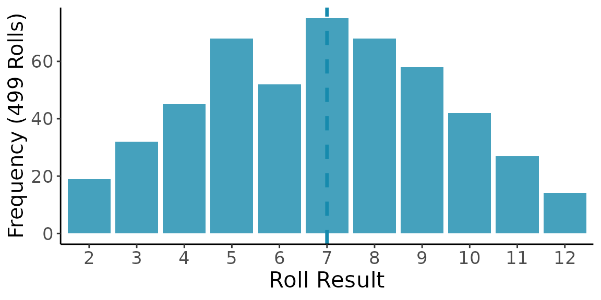
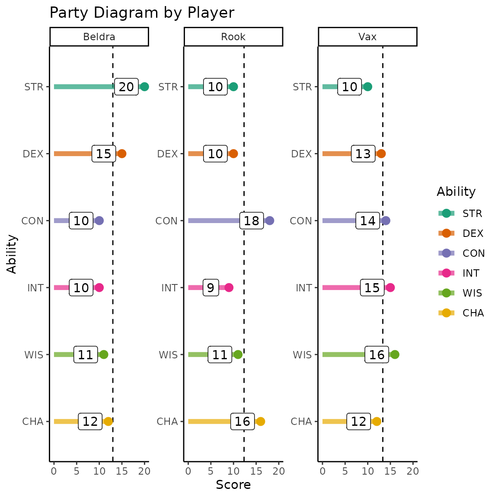
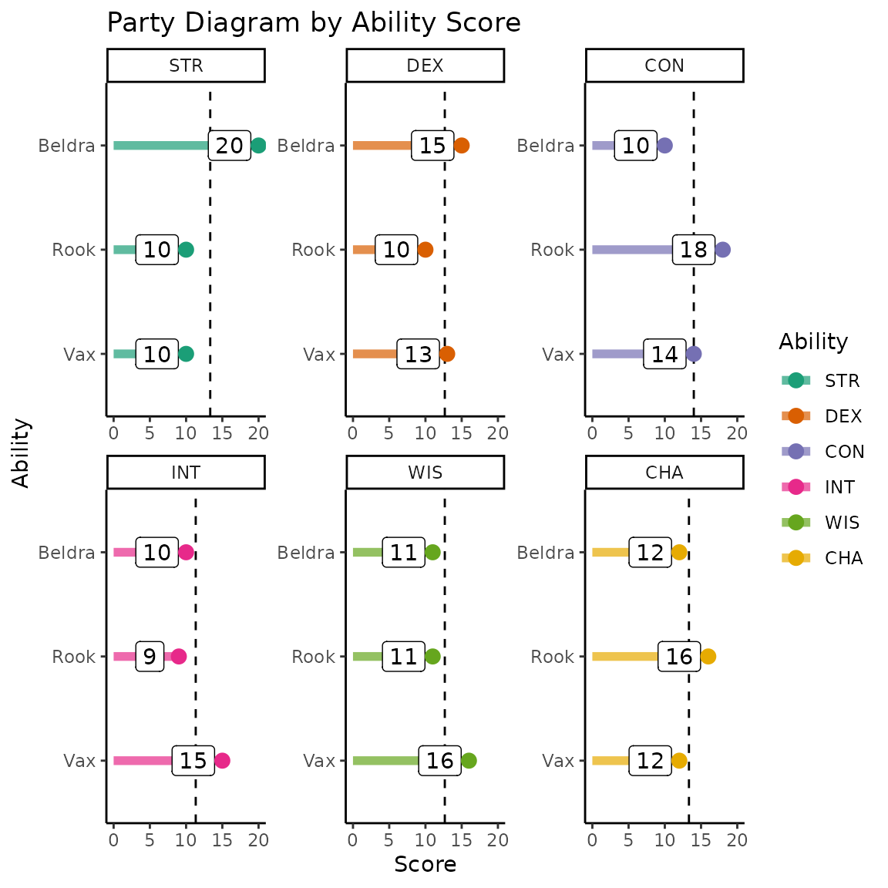
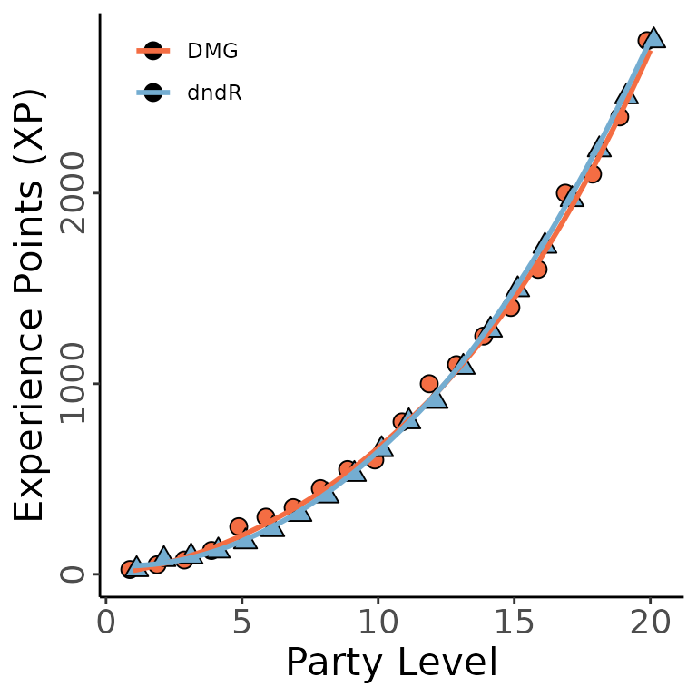
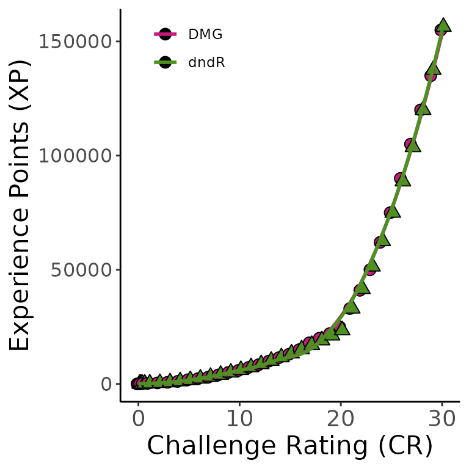

Welcome to dndR!
I am a big fan of both R and Dungeons and Dragons so I thought it
would be a fun test of my coding skills to build an R package that
supports this hobby! dndR includes several functions that
can be broadly divided between functions for both players and dungeon
masters (DMs) and functions that are intended primarily for DMs.
If any of these functions break for you, please post an Issue and I’ll
tweak the code ASAP. I hope that you enjoy the rest of this vignette as
it demonstrates some of the use-cases for the functions currently
included in dndR!
Begin by ensuring that you have the development version of
dndR installed.
Dice Rolling
At its simplest, DnD involves significant amounts of dice rolling and
(often) summing their values, so dndR includes a
roll function! This function supports ‘rolling’ up to 10
million of any of the standard dice and summing their results.
“Standard” dice include the following numbers of sides: 100, 20, 12, 10,
8, 6, 4, and 2.
Note that ‘2d20’ is automatically assumed to be rolling with advantage/disadvantage so it will return a message to that effect and both numbers.
dndR::roll(dice = '2d20')
#> Assuming you're rolling for (dis)advantage so both rolls returned
#> roll_1 roll_2
#> 1 14 8You can also use probability_plot to roll dice a
specified number of times and generate a ggplot2 graph of
the frequency of various outcomes. The median outcome is specified by a
dashed vertical line.
dndR::probability_plot(dice = "2d6", roll_num = 499)
Character Creation
pc_creator rolls for a character’s ability scores
(strength, dexterity, constitution, intelligence, wisdom, and charisma)
given a particular class, race, and preferred method of rolling for
ability scores.
dndR::pc_creator(class = 'barbarian', race = 'half orc', score_method = "4d6")
#> Total score low. Consider re-rolling?
#> At least one ability very low. Consider re-rolling?
#> ability raw_score race_modifier score roll_modifier
#> 1 STR 14 2 16 +3
#> 2 DEX 9 0 9 -1
#> 3 CON 12 1 13 +1
#> 4 INT 7 0 7 -2
#> 5 WIS 9 0 9 -1
#> 6 CHA 9 0 9 -1You can check which classes and races are currently supported by
pc_creator by running dnd_classes or
dnd_races. If you have a class/race in mind that isn’t
supported you can post
an Issue and I’ll add that class/race’s stats to the function
ASAP!
While waiting for me to act on your Issue, you can run the simpler
ability_scores function to simply roll for ability scores
and manually assign them to specific abilities and handle
race/class/background based modifiers yourself.
dndR::ability_scores(method = "4d6")
#> Total score low. Consider re-rolling?
#> ability score
#> 1 V1 10
#> 2 V2 15
#> 3 V3 8
#> 4 V4 12
#> 5 V5 10
#> 6 V6 14If you do experience point-based leveling, you can use the
pc_level_calc function to check what level your PC has
reached with the amount of XP they have earned. Thanks to Humberto Nappo
for contributing this function!
dndR::pc_level_calc(player_xp = 4100)
#> player_level xp_threshold proficiency
#> 4 4 2700 +2Spell-Related Functions
There are a lot of spells in the various Dungeons &
Dragons source books that your character might be able to invoke.
Finding specific spells can be a daunting task in the face of the sheer
number of spells that exist so dndR has some functions to
hopefully make this effort more manageable for your magic-using
characters and NPCs.
spell_list lets you search through official spells based
on several categories. A dataframe including all of the big picture
information for spells that meet your criteria is returned to help
orient you for any subsequent steps you plan on taking. Note that all
spell_list arguments that accept characters are case
insensitive and queries use partial string matching so you don’t need to
try to engineer exact matches. Specifically, you can query spells based
on one or more of the following criteria:
- Spell name(s)
- Character classes with access to the spell(s)
- Minimum spell slot required to cast the spell and/or “cantrip”
- School(s) of magic to which the spell belongs (e.g., “abjuration”, etc.)
- Whether or not the spell can be cast as a ritual (note this argument
accepts only
TRUEorFALSE) - Time to cast the spell (either the phase of a turn required or the in-game time for spells that take more than one turn to cast)
dndR::spell_list(name = "bolt", class = "sorcerer", ritual = FALSE)
#> spell_name spell_source
#> 1 Fire Bolt Player's Handbook.241, System Reference Document.144
#> 2 Witch Bolt Player's Handbook.289
#> 3 Lightning Bolt Player's Handbook.255, System Reference Document.159
#> 4 Chaos Bolt Xanathar’s Guide to Everything.151
#> pc_class
#> 1 artificer, sorcerer, wizard
#> 2 sorcerer, warlock, wizard
#> 3 sorcerer, wizard, artificer: armorer, druid: mountain, warlock: fathomless
#> 4 sorcerer
#> spell_level spell_school ritual_cast casting_time range
#> 1 cantrip evocation FALSE 1 action 120 feet
#> 2 level 1 evocation FALSE 1 action 30 feet
#> 3 level 3 evocation FALSE 1 action self (100-foot line)
#> 4 level 1 evocation FALSE 1 action 120 feet
#> components
#> 1 V, S
#> 2 V, S, M (a twig from a tree that has been struck by lightning)
#> 3 V, S, M (a bit of fur and a rod of amber, crystal, or glass)
#> 4 V, S
#> duration
#> 1 instantaneous
#> 2 concentration, up to 1 minute
#> 3 instantaneous
#> 4 instantaneousIf you have a specific spell (or several spells) for which you want
the complete spell information (including the description text),
spell_text is there to help. spell_text only
accepts the spell name(s) for which you want information and returns all
of the information that spell_list does but also gives you
the spell description text and (if applicable) how the spell changes
when cast with a higher level spell slot or by a higher level player
character.
dndR::spell_text(name = "chill touch")
#> spell_name spell_source
#> 1 Chill Touch Player's Handbook.221, System Reference Document.124
#> pc_class spell_level spell_school ritual_cast
#> 1 sorcerer, warlock, wizard, druid: spores cantrip necromancy FALSE
#> casting_time range components duration
#> 1 1 action 120 feet V, S 1 round
#> description
#> 1 You create a ghostly, skeletal hand in the space of a creature within range. Make a ranged spell attack against the creature to assail it with the chill of the grave. On a hit, the target takes 1d8 necrotic damage, and it can't regain hit points until the start of your next turn. Until then, the hand clings to the target. If you hit an undead target, it also has disadvantage on attack rolls against you until the end of your next turn.
#> higher_levels
#> 1 This spell's damage increases by 1d8 when you reach 5th level (2d8), 11th level (3d8), and 17th level (4d8).Encounter Balancing
When I am the Dungeon/Game Master (DM / GM) I find encounter
balancing to be really difficult, in part because of the nest of
inter-related tables and experience point multipliers outlined in the
Dungeon Master’s Guide (DMG) that must be consulted for novice GMs such
as myself. To help other newbies, dndR includes the
xp_pool and xp_cost functions.
Experience Point (XP) Thresholds
The difficulty of an encounter in DnD is affected by three things:
- Level of characters
- Number of characters in the party
- How difficult the GM wants to make things for their players
The DMG handles this by providing experience point (XP) thresholds
based on these three factors. All enemies are worth a pre-determined
amount of XP so encounters are balanced by the DMG listing the total XP
of all monsters in a given fight for every level of players, party size,
and difficulty. That table is useful but a little dense to work through
as you’re prepping potentially multiple encounters per session, so this
is where xp_pool becomes useful.
xp_pool returns the amount of XP the GM can ‘spend’ on
monsters in a given encounter to ensure the difficulty is as desired
based on the three factors identified above.
dndR::xp_pool(party_level = 2, party_size = 4, difficulty = "medium")
#> [1] 625XP Multipliers
While it is crucial to know the amount of XP in available to the GM per encounter, it fails to account for the effect of the number of enemies. A fight versus a single monster worth 1000 XP is a very different proposition than a fight against four creatures each worth 250 XP even though the total XP is the same.
The DMG accounts for this by providing XP multipliers based on the number of monsters and the number of players. The same total monster XP is multiplied by a larger value for more monsters facing a smaller party than it would be for fewer monsters facing a larger party.
So, if you are using the DMG to balance an encounter you have to total up the XP of the monsters in an encounter and then go to a different part of the DMG where you can multiply that value by the multiplier in the relevant row of a second table which would then tell you the “actual” XP of the creatures you have selected. If you had too many or too few monsters you’d have to repeat this process iteratively until you identified the correct amount of “raw” XP to yield your desired “realized” XP in an encounter. Cumbersome, right?
dndR provides an alternative to using the multiplier
table in xp_cost. xp_cost requires the “raw”
XP of the monsters you have selected, the number of monsters, and the
number of player characters (PCs) and returns the “realized” XP. You can
then quickly compare this with the value return by xp_pool
to determine whether you need to add or remove creatures from your
encounter.
dndR::xp_cost(monster_xp = 1000, monster_count = 2, party_size = 3)
#> [1] 1500Quick XP Demonstration
Let’s say I am running a game for four players, all level 3, and I
want to design a hard encounter for them and I want to use
dndR to balance this encounter.
To begin, I’d identify the total XP I can spend to make an encounter this difficult.
dndR::xp_pool(party_level = 3, party_size = 4, difficulty = 'hard')
#> [1] 1112Now that I know my XP threshold, I can check the value of two monsters worth (total) 500 XP against that threshold.
dndR::xp_cost(monster_xp = 500, monster_count = 2, party_size = 4)
#> [1] 750I can see that I’m well under the XP threshold I have to play with so I can add a monster and see where that leaves me.
dndR::xp_cost(monster_xp = 750, monster_count = 3, party_size = 4)
#> [1] 1500A little over because of the multiplier, so let’s say I change my mind and keep three monsters but change their identity to one with a lower XP value.
dndR::xp_cost(monster_xp = 600, monster_count = 3, party_size = 4)
#> [1] 1200Basically right on target! I can now pick out my three monsters that total up to 600 XP raw and know that they will likely* make a hard encounter for my players! (* “Likely” because there is dice rolling involved and it is possible that the monsters roll well while my players roll badly or vice versa).
Assessing Party Abilities
It can be useful as a GM to know what abilities your party is–as a
whole–strong in versus weaker in. party_diagram allows GMs
to visualize the ability scores of every player in a party either
grouped by player or by ability score. The function supports both
interactive (abilities entered via the Console) and non-interactive
(abilities given as a list) entries. Thank you to Tim Schatto-Eckrodt for contributing this
function!
Due to the static nature of a vignette, we’ll use the non-interactive
path by assembling the party score list and then invoking
party_diagram.
# Create named list of PCs and their scores
party_list <- list(Vax = list(STR = "10", DEX = "13", CON = "14",
INT = "15", WIS = "16", CHA = "12"),
Beldra = list(STR = "20", DEX = "15", CON = "10",
INT = "10", WIS = "11", CHA = "12"),
Rook = list(STR = "10", DEX = "10", CON = "18",
INT = "9", WIS = "11", CHA = "16"))
# Create a party diagram using that list (by player)
dndR::party_diagram(by = "player", pc_stats = party_list, quiet = TRUE)
You can also group the diagram by score if that is of interest.
dndR::party_diagram(by = "ability", pc_stats = party_list, quiet = TRUE)
Creating Non-Player Characters
Non-player characters (NPCs) are a key component of D&D. It can
be hard to come up with NPCs on the fly that aren’t directly linked to
the current story arc but doing so is a great way to add realism to your
world. The npc_creator function helps GMs speedily create
some quick baseline information for a number of NPCs.
Simply specify the number of NPCs you want to generate and this function will randomly select a race and job for each NPC. You can re-run the function if the race-job combinations returned by the function don’t match your current campaign tone / history.
dndR::npc_creator(npc_count = 2)
#> Race Job
#> 1 changeling barber
#> 2 half elf archaeologistCreating Monsters
Creatures that you create can be a great way to add flavor to an
encounter or can even form the centerpiece of a larger campaign arc! The
monster_stats and monster_creator functions
can help GMs to quickly stat out their homebrewed monsters.
Finding Official Monster Statistics with
monster_stats
The DMG provides a table (see p. 274) that gives the vital statistics
of creatures based on their Challenge Rating (CR) but this table can be
cumbersome to compare to Experience Points (you know, the things used to
determine how hard an encounter will be for your party?).
monster_stats streamlines this process by allowing you to
input either the XP you want to spend on this creature (you can use the
value returned by xp_cost) or the Challenge Rating
(CR) if you know it. Once either XP or CR is provided,
monster_stats returns the creature’s statistics as they
appear in the DMG for a single creature of that difficulty.
dndR::monster_stats(xp = 1000, cr = 4)
#> CR and XP both specified, proceeding with CR
#> # A tibble: 8 × 2
#> statistic values
#> <chr> <chr>
#> 1 Challenge 4
#> 2 DMG_XP 1100
#> 3 Prof_Bonus 2
#> 4 Armor_Class 14
#> 5 HP_Range 116-130
#> 6 HP_Average 123
#> 7 Attack_Bonus 5
#> 8 Save_DC 14Challenge Rating is more than a little esoteric so feel free to ignore that argument entirely if XP is more comfortable for you!
dndR::monster_stats(xp = 8000)
#> # A tibble: 8 × 2
#> statistic values
#> <chr> <chr>
#> 1 Challenge 11
#> 2 DMG_XP 7200
#> 3 Prof_Bonus 4
#> 4 Armor_Class 17
#> 5 HP_Range 221-235
#> 6 HP_Average 228
#> 7 Attack_Bonus 8
#> 8 Save_DC 17Homebrewing Custom Monsters with monster_creator
If you’d rather take a more customized approach, you can use
monster_creator instead of monster_stats. This
function follows the advice of Zee Bashew on how to build
interesting, challenging monsters for your party. These monsters are
built somewhat according to the Dungeon Master’s Guide for creating
monsters, partly Zee’s YouTube video on
homebrewing monsters based on the video game The Witcher,
and partly on my own intuition about scaling the difficulty of a
creature. Creatures are spawned randomly so you may need to re-run the
function several times (or mentally modify one or more parts of the
output) to get a monster that fits your campaign and players. Each
creature is provided with up to five damage resistances, up to two
damage immunities, and a single vulnerability. This combination allows
you to build complex and mysterious homebrew monsters with plenty of
opportunities for the party to have to investigate around to discover
the monster’s strengths and weaknesses before the final showdown.
dndR::monster_creator(party_level = 5, party_size = 4)
#> statistic value
#> 1 Hit_Points 92
#> 2 Armor_Class 16
#> 3 Prof_Bonus 3
#> 4 Attack_Bonus 7
#> 5 Save_DC 16
#> 6 Prof_Saving_Throws INT; CHA
#> 7 Immune_to poison; acid
#> 8 Resistant_to thunder; psychic; lightning; bludgeoning; fire
#> 9 Vulnerable_to piercing
#> 10 STR +2
#> 11 DEX +1
#> 12 CON +1
#> 13 INT +1
#> 14 WIS +1
#> 15 CHA +1Note that if you use monster_creator you may need to
help your players identify the creature’s immunities and vulnerabilities
before the actual confrontation with the creature to avoid
sending them into a fight that is more difficult than your party can
handle.
dndR versus DMG Comparisons
See below for some comparisons between my functions and the Dungeon Master’s Guide statistics they recapitulate.
xp_pool vs. DMG
The DMG specifies the XP threshold per player for a given difficulty while my function asks for the average player level and the party size. This difference keeps the function streamlined and flexible for parties of any size.
Rather than embedding the DMG’s table for encounter XP,
xp_pool actually uses the formula for the line defining the
XP-party level curve implicit in the DMG. This has the added benefit of
being able to handle non-integer values for average party_level.
Below is a comparison of the DMG’s XP-to-party level curve versus the
one obtained by xp_pool.

cr_convert vs. DMG
cr_convert is embedded in the monster_stats
function and is what allows that function to handle both CR and XP
inputs. The DMG specifies the XP value of a monster of any CR from 0 to
30 so cr_convert uses the formula of that line to avoid
querying the table for this conversion.
Below is the comparison of the DMG’s XP-to-CR curve and the one
produced by cr_convert.
